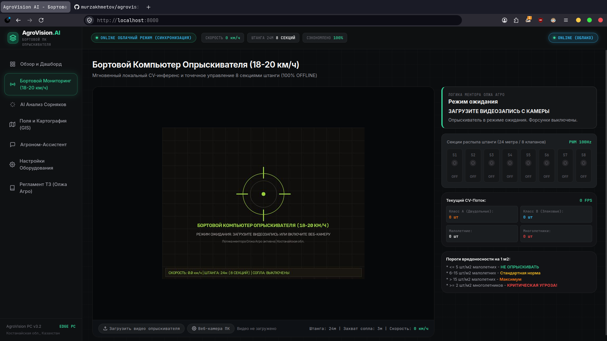
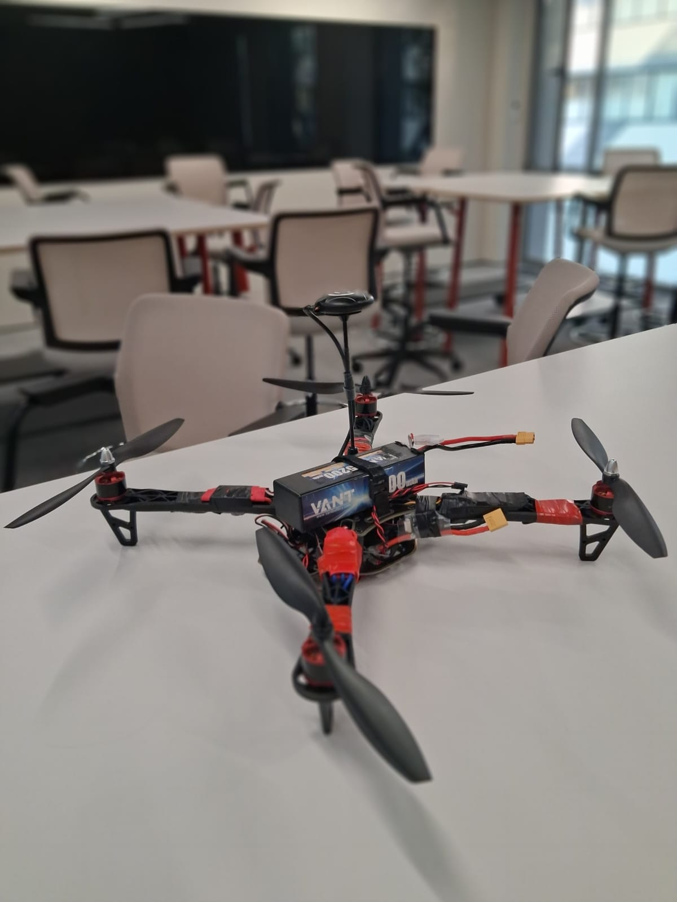
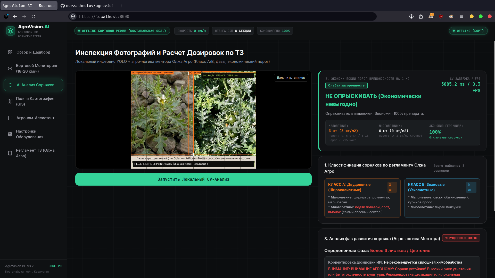
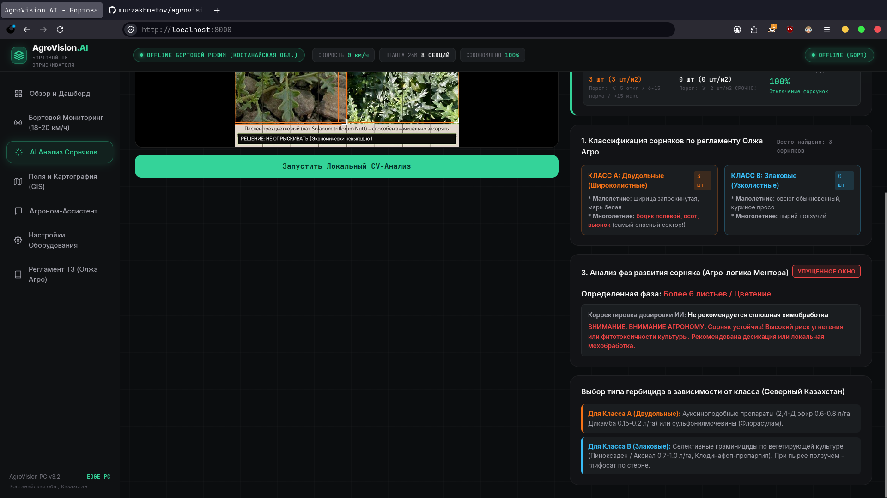
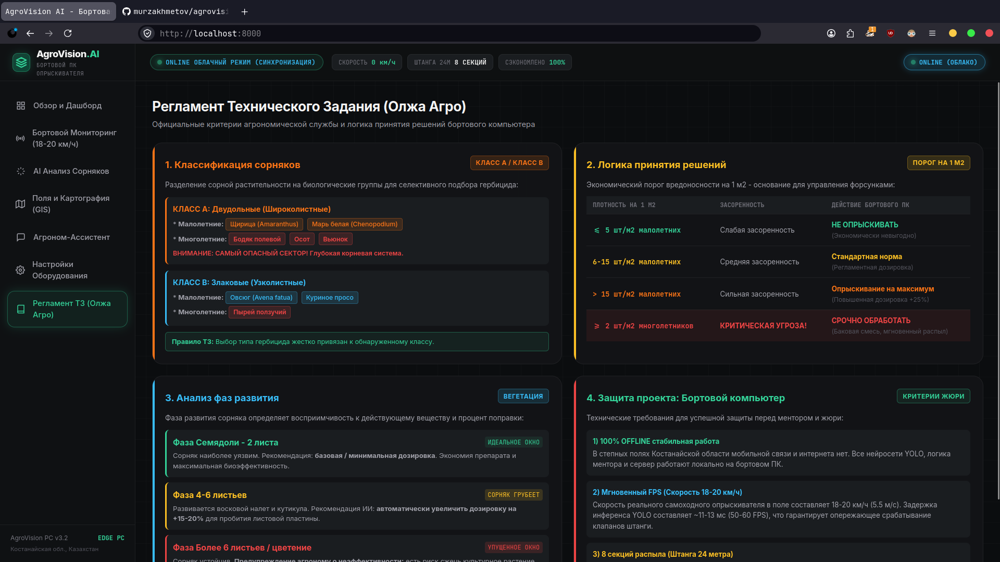
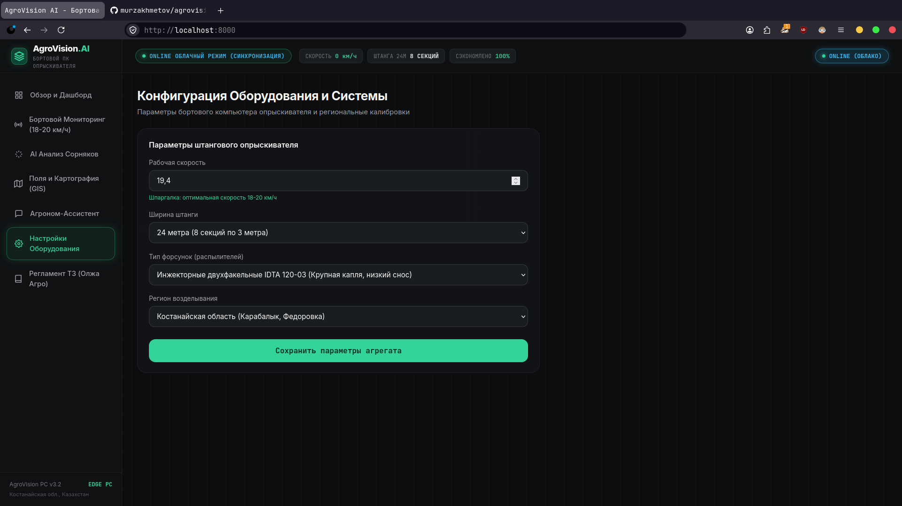

Точное опрыскивание.
Экономия 60-80% СЗР.
Бортовой компьютер для самоходных опрыскивателей по регламенту Олжа Агро. Локальный инференс YOLO на скорости 18-20 км/ч, детекция сорняков Классов A и B, экономический порог вредоносности на 1 м2 и быстродействующее PWM-управление 8 секциями штанги 24 метра.

Логика принятия решений бортового компьютера
Строгое соответствие 4 блокам агрономического регламента Северного Казахстана.
Локальный инференс YOLO
Модели YOLOv8s CropAndWeed и YOLO11n Broadleaf работают прямо на бортовом ПК без интернета с временем отклика 11-13 мс на скорости 18-20 км/ч.
Классификация Класс A vs B
Разделение сорняков на двудольные (Класс A: щирица, марь, бодяк, осот, вьюнок) и злаковые (Класс B: овсюг, просо, пырей) для раздельного подбора действующих веществ.
Порог вредоносности на 1 м2
До 5 малолетних сорняков на 1 м2 - форсунки выключены (100% экономия). 6-15 шт/м2 - норма. Более 15 шт/м2 - максимум (+25%). От 2 многолетников - критическая опасность и срочная обработка.
Точечный PWM распыл
Быстродействующие клапаны независимо управляют 8 секциями штанги 24м, исключая сплошной перерасход и химические ожоги культуры.
Система AgroVision AI в реальной работе
Видеодемонстрация работы терминала опрыскивателя на скорости 18-20 км/ч с визуализацией 8 секций штанги.
Оборудование для полевых условий
Надежная инженерия для работы в условиях степей Костанайской области.

Метеостанция и бортовой блок
Полевая метеостанция для фиксации благоприятного окна опрыскивания (ветер до 5 м/с, температура +12...+22 C) и вычислительный блок с инжекторными форсунками IDTA 120-03 для защиты от ветрового сноса.

Аэроразведка полей и БПЛА
Мультиспектральные агро-дроны для предварительного картирования полей, построения карт вегетационного индекса NDVI и выявления очагов многолетников перед выездом опрыскивателя.
Полнофункциональный софт агронома
Весь функционал бортового компьютера опрыскивателя в едином веб-терминале.
Бортовой монитор (18-20 км/ч)
Видеопоток штанги в реальном времени, прицел детекции, визуализатор 8 секций распыла (S1-S8), счетчики Класса A/B и расчет экономии СЗР.
Инспекция фото и расчет по ТЗ
Локальный инференс по фотоснимкам поля, порог вредоносности на 1 м2, определение фазы развития и автоматическая корректировка дозировки.

Выбор гербицидов по классам
Официальные рекомендации препаратов: ауксиноподобные 2,4-Д и дикамба для Класса A, селективные граминициды для Класса B, глифосат по стерне при пырее.

Агроном-Эксперт (Офлайн + Gemini 3.1 Flash Lite)
Автономная база знаний для работы без связи и облачная модель Google Gemini 3.1 Flash Lite с предустановленным API-ключом при наличии сети.

Официальный регламент ТЗ ментора
Интерактивный экран со всеми 4 блоками регламента агрономической службы Олжа Агро.

Конфигурация опрыскивателя
Калибровка рабочей скорости (18-20 км/ч), ширины захвата штанги (24 метра), распылителей и региона возделывания.

Запустите AgroVision AI прямо сейчас
Запуск в 1 клик через AgroVision.exe для Windows или start_pc_system.sh для Linux/macOS. 100% бесплатно и автономно.